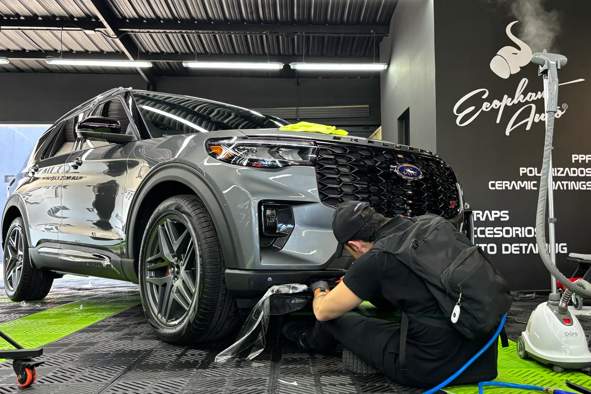

Proteccion de pintura
PPF Paint Protection Film
Protege la pintura contra impactos leves, marcas de carretera, rayones superficiales y desgaste diario sin alterar el acabado original.
Ecophant Auto llega a Bogota como un estudio nuevo, respaldado por una trayectoria de 10 anos en Boca Raton, Florida, trabajando en proteccion, acabado y presencia premium para vehiculos exigentes.
Nuestra forma de trabajar combina precision tecnica, criterio estetico y estandares alineados con Ceramic Pro, donde hemos desarrollado experiencia como Elite Dealer para entregar procesos consistentes y acabados impecables.
Conoce nuestra historiaCada servicio esta pensado para resolver una necesidad real del vehiculo con una ejecucion precisa, materiales premium y una terminacion limpia que se siente a la altura de la inversion.
Publicamos comparativos y guias practicas para ayudarte a entender que hace cada servicio, cuando conviene y que resultados puedes esperar antes de tomar una decision.